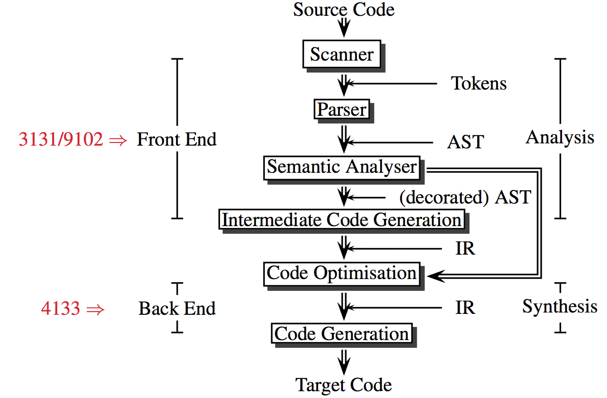
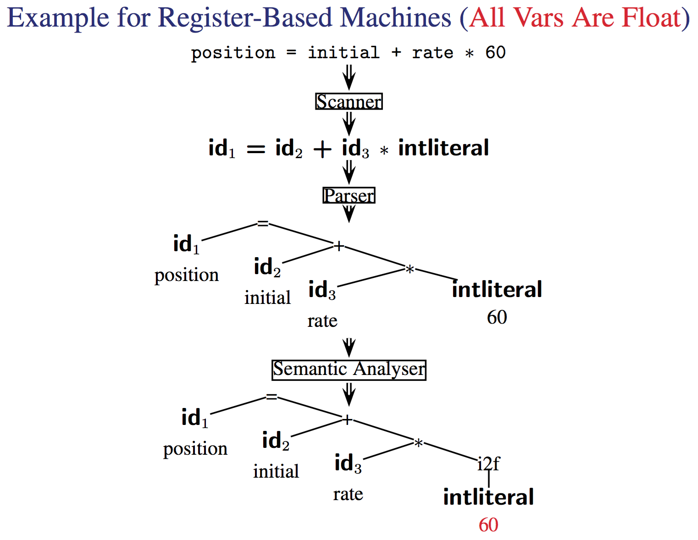
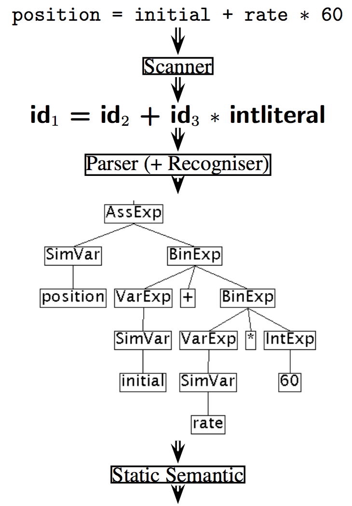
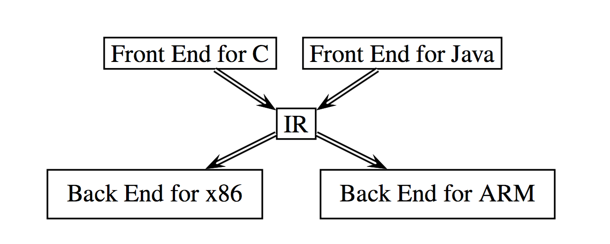
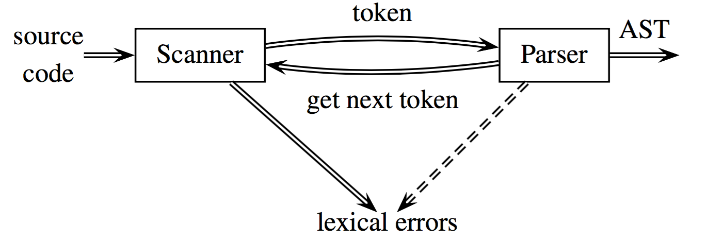

Assignment 1 : week 3
Assignment 2 : week 6
Assignment 3 : week 8
Assignment 4 : week 11
Assignment 5 : week 12
The 5 assignments build upon one another:
Tutorials start week 3
Work on the assignments should be consistent in leu of regular labs. There are 5 and the first is due in week 3 before the first tutorial. Start working on it in week 1./Set aside a regular amount of time maybe 4-10 hours a week to consistently work on the next assignment.
It is just a program to take in code and produce Machine code / other representation of code usually at a lower level of abstraction. In doing this the compiler will output errors and warnings to the user.
This is because as well as just compiling down a language a compiler must be able to reocgnise what a legal program is and ensure that it only produces legal programs.
It may generate a program that does not have the expected behavior but it should not produce code that can not run.
Although not always true a compiler should strive to generate optimal and efficient code wherever possible.
We take in code and we start by feeding it into a scanner. This will split the code into tokens.
These tokens are then passed into he parser which produces a abstract syntax tree, A tree representation of the code that holds the syntactical meaning of the original code.
This then goes through the Semantic analyser to produce a decorated tree. At this point the analysis stage of the compilation is over and the compiler now moves into the synthesis stage.
Immediate code generator creates the IR (Intermediate Represetnation) which can then be fed into code optimization and code generators (out of the scope of this course lmao)
Note that the decorates AST can be passed directly into the code optimization stage.

Here you should note that the decorated tree simply adds in the step to convert the int literal to a float because all values in this register based machines are floats.

Now we can move this tree into code form by shifting it first into a IR
Temp1 = i2f(60)
Temp2 = id3 ∗ Temp1
Temp3 = id2 + Temp2
id1 = Temp3You may already notice that here the code is a bit inefficient.
rather then moving 60 into a temp we can multiply it by id3 directly. And rather then assinging id2 * Temp2 to Temp 3 only to have that reassigned to id1 we can just assign it directly to id1
Temp2 = id3 ∗ 60.0
id1 = id2 + Temp2This now can be used to generate some machine code as it is split up into simple single arithamtic steps. Note that this is the main step that relys on specific chip arcitecture and thus this step will need to know if there is a multiply by immediate command or not.
MOVF rate, R2
MULF #60.0, R2
MOVF initial, R1
ADDF R2, R1
MOVF R1, positionTake a look at this example for the java compiler

Here we have assignment expressions (AssExp lol) which splits up the expression into a left side and right side. I.e left = right or position = initial + rate * 60
This is then split into a simple variable called position to the left and a binary expression to the right.
a binary expression being a expression with 2 variables involved.
this contines to be split down untill we have the syntax tree.
Note the need to know what variabels are simple because in java sometimes variables may be more complex such as objects/pointers
THe idea is that multiple different languages can be compiled into the same IR using multiple front ends.
Once in this form you can use generic IR optimization tools and then feed this ir into different back ends depending on the system

This means we can simplify retargeting using this "everybody gets the same IR" thing
M languages + N architectures -> M frontends + N backends not
MN frontends + NN backends
The tool that does this is the scanner!
It just groups characters into tokens.
Tokens are just the basic unit of syntax
A line like this
position = initial + rate * 60splits into 7 tokens
The key issue with this is speed. You need it to be fast but it is a inherently slow process.
Do note that there is a token and a lexeme this is the difference taken from
Using "Compilers Principles, Techniques, & Tools, 2nd Ed." (WorldCat) by Aho, Lam, Sethi and Ullman
A lexeme is a sequence of characters in the source program that matches the pattern for a token and is identified by the lexical analyzer as an instance of that token.
A token is a pair consisting of a token name and an optional attribute value. The token name is an abstract symbol representing a kind of lexical unit, e.g., a particular keyword, or sequence of input characters denoting an identifier. The token names are the input symbols that the parser processes.
The lexeme is the actual text forming a token
and now we come to the parser
This just groups tokens together into gramatical phrases, which it represents as a AST.
In doing this it can produce meaningful error messages that define what the issue is in terms of grammer rather then what actually goes wrong on the compiler level, because it understands the grammer is can also attempt error detection and recovery.
Note that how this tree is constructed is defined by the grammer, usually this is context free (Context free grammer or CFG).
A context free grammer is just a grammer that does not depend on context amazingly enough. That is to say that 7=5 is interperted the same way regardless of the context it is seen in. A non context free grammer is html as because the compiler will fix issues instead of raising compiler warnings it must treat the same tags differently depending on where they are. I.e if a tag is in a illegal place it doesn't raise a warning it just compiles it differently to fix the issue.
anyway usually the typical grammer is defined
⟨expr⟩ → ⟨expr⟩ + ⟨term⟩ | ⟨expr⟩ − ⟨term⟩ | ⟨term⟩
⟨term⟩ → ⟨term⟩ ∗ ⟨factor⟩ | ⟨term⟩ / ⟨factor⟩ | ⟨factor⟩
⟨factor⟩ → ( ⟨expr⟩ ) | ID | INTLITERALThis just says that a expression is either a expression + a term, a expression - a term or a term.
so something like 7 + 5 - 8 breaks down as such
(7 + 5) - 8 // expr - term
((7)+5)-8 // (expr + term) - termsimilarly we have that a term is a term times a factor or just a factor
and finally that a factor is either a expression, an id to some memory, or a literal.
3 lines of grammer allow the parser to parse any concievable expression which is a amazing exponetial growth of complexity
This is when we get to the Static Semanatics section of the compiler.
suprise suprise it checks the program for semantic errors
It also does a incredibly important task. Type checking
It usually just uses a symbol table that defines every variable and it's type
And then makes sure that given this type the context the variable is used in is valid. You can't use a float to index an array! Do note that this step will convert types if permitted by the language.
The Intermediate Code Generator generates an explicit IR from the AST.
The IR isn't like universally defined but it must be easy to generate while also being easy to convert into machine code.
This usually is the place where subtle small changes effect the speed and effectivness of a compiler.
Popular IRs:
Some common optimization is to remove code that can never be reached, discover some constant value and propergate it so it doesn't have to be called from a variable, remove reduant computation and remove it or sometimes moving a computation to a different place where it has equal effect but is run redunently less often.
A crucial aspect is the assignment of variables to registers.
Handling errors is split up into 3 parts
WHERE it occuredWe can optionally implement error recovery in your parser.

Due to this structure usually the scanner runs as a sub routine within the parser
note that we will not be using a symbol table until assignment 3
So java has a stringTokeniser built in!
import java.util.*;
// the first string in the input
// the second is the token deliminators
// the third is if the delimator should be included in the token or not
StringTokenizer s = new StringTokenizer("(02) 9385 4889", "() ", false);
while (s.hasMoreTokens())
System.out.println(s.nextToken());You can have different tokens depending on the language. In english tokens are words and can be classified as noun tokens or verb tokens etc.
In VC (variant of C) there are 5
Now you define tokens with regex patterns (just called patterns in the context of compilers) but do note you can do assignment 1 without regex
Some patterns:
| Token Type | Pattern | example |
|---|---|---|
| intLiteral | \d+ |
764 |
| floatLiteral | \d(.\d+)?( [Ee][\+\-]?\d+) |
7.2 E3 |
There is also a formal system for defining tokens revolving around finate state machiens but this is covered in more detail week 2
we can represent tokens as such
Token Representation
------------------------------------------------------------
sum new Token(Token.ID, "sum", sourcePosition);
123 new Token(Token.INTLITERAL, "123", sourcePosition);
1.1 new Token(Token.FLOATLITERAL, "1.1", sourcePosition);
+ new Token(Token.PLUS, "+", sourcePosition);
, new Token(Token.COMMA, ",", sourcePosition);SourcePosition is an instance of the Class SourcePosition and has these fields:
note you can have the scanner return a error token if it reaches some text that it does not have a matching pattern for. This can thus raise a lexical error. This would happen with a string with no end " as this isn't a valid token at all! some examples from VC:
/* -> prints an error message (unterminated comment)
|, ^, %, etc. -> returns an error token and continues lexical analysisnote how we can't recover from a untermined comment because it could very well comment out all the code in the document.
now there are many different ways to create a scanner but 2 things must always be true when the scanner is calle to produce a token.
currentChar is pointing to either the beginning of whitespace, a comment or a token.
The pattern must always be a greedy match. Always match the longest possible string. ">=" not ">"
What are the tokens of the language?
see Token.java
Are keywords reserved?
yes in VC, as in C and Java
How to distinguish identifiers and keywords?
see Token.java
How to handle the end of file
return a special Token
How to represent the tokens?
see Token.java
How to handle whitespace and comments?
throw them away
What is the structure of a scanner?
see Scanner.java
How to detect and recover from lexical errors?
have partial token matches to detect them and possible fix them by adding in a missing "?
How many characters of lookahead are needed to recognise a token?
depends on the token, for a exponent it's 3 and for i++ it's 2
you may have used languages like python that let you use words defined by the language as variables (known as identifiers in this course)
there is a language called PL/1 where the line if then = else then if = then; else then = if is legal because if and then are used as variables
How does the compiler handle this? well either the scanner interacts with the parser to help it out by giving it more context or it regard the identifiers and keyword as having the same token type, leaving the task of distinguishing them to the parser. here you could do something like "any if that isn't followed by a expression is a variable"